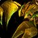

The novelty of a Warlock tank has made Twin Emps highly discussed. However, in my experience, it is by far the most consistent and easy role in the fight. That said, it is incredibly fun!
The primary goal of this guide is to coach anyone to be capable of performing the role in Hardcore, even if they have zero prior experience with AQ40 in any capacity. It provides a step-by-step explanation of how to perform the fight, as well as everything you need to know to prepare ahead of time.
The nature of Hardcore demands consistent strategies that work on the first try. For that reason, the same strategies can be applied by non-Hardcore (softcore) guilds who are progressing the raid. It is not the task of this guide to discuss parse strategies, instead aiming for an extremely simple, repeatable, methodology with as little movement and intricacy as possible.
Additionally, there are several non-trivial questions on which I hope to share my knowledge. In particular the matters of spell pushback mitigation, and Vek'lor's Melee Mode. The latter of which is still not fully understood.
0.2 About the Author
Who is esuvii? In short, I love HC WoW and my favourite class is Warlock! I played Warlock through 2019 Classic, TBC and WotLK. In mid-late 2020, I first tried Hardcore, largely inspired by watching B0aty play HCIM OSRS I attempted (and succeeded) to level a HC Hunter to 60. Later I began to actively play as a member of the Classic Hardcore community, and in November 2021 I joined the HC Road to Ragnaros event in Season of Mastery. Ever since then I've been raiding as a Warlock in HC Elite.
As of writing this, I've played Warlock on Twins Emps a minimum of:
32 times in softcore.
12 times in unofficial HC on BSB (including the first ever clear).
73 times in official HC on Defias Pillager (including the world first official clear).
During this time I have coached several Warlocks to tank Twins in HC, including those with zero experience.
We have NEVER had a Warlock tank die on Twins.
Through HC I have tanked in a BWL level SR set, absolute BiS SR gear, fresh 60 + crafted SR gear, and one time when I forgot to equip SR gear.
While there is no single highest authority on this fight, I believe there is a strong case that I have the most HC experience.
1. The Basics
Twin Emperors, as the name suggests, is a fight with two bosses: Vek'lor (caster boss), and Vek'nilash (melee boss). It is a required boss, situated after Huhuran, and opens the door which leads to Ouro and C'thun.
Fig 1: The Twin Emps boss room.
Here we see the boss starting positions, Figure 1. You will either be the "left side" or "right side" Warlock tank, and will stay within those areas. We'll see this in much more detail in the Positioning section.
The fight typically lasts between 3 to 5 minutes. It is not a DPS race, the enrage (Berserk) timer is 15 minutes - you must kill the bosses in this time, but that should not be an issue. Vek'lor and Vek'nilash share a percentage health pool, damage to one will hurt the other, so it is okay if your raid is heavily skewed towards magical or physical damage.
The final shared mechanic is Heal Brother. If the bosses are within 60 yds they will spam heal each other for 300k per cast. This is why we tank them on opposite sides of the room.
1.1 Twin Teleport
The most fundamental mechanic of this fight is the Twin Teleport. Perodically the bosses will Teleport, swapping positions. All Threat is reset, and whoever is closest to a boss will gain 2000 Threat for that boss. While you are waiting (AFK Phase), i.e. Vek'nilash is on your side, you must ensure you are ready to begin tanking Vek'lor immediately after the Teleport.
Fig 2: An example DBM timer for the Twin Teleport.
The Teleport timing is random, and will happen any time during a ~11 second window, starting ~29s after the previous Teleport. DBM's data suggests the earliest Teleport (window open) is after ~29.2s and the latest is ~40.2s (window closes). Figure 2, shows how my DBM timer looks for the Twin Teleport. The transparent part of the timer represents the time until the Teleport window opens, and the highlighted portion on the right side is the maximum possible duration of the window.
Fig 3: My DBM timer settings.
Depending on how your DBM is configured, or if you are using a different addon such as BigWigs, your timer may look different. In Figure 3 you can see how I configured my timer to countdown until the window opens, instead of the default of until it would close. This is down to personal preference, and the way addons look is likely to change in the future.
When they Teleport it is imperative that all DPS are away from the bosses, and have no large DoTs (e.g. Ignite) rolling. This can result in the bosses moving, and possibly killing people.
1.2 Vek'lor
Emperor Vek'lor is the caster boss; he is immune to all physical damage. This is the boss we Warlock tank. While it is technically possible for other classes to tank him (e.g. a Paladin spamming GBoK), we will not cover that - Warlock is by far the safest choice.
Shadow Bolt
1.6s cast time, deals 3600 Shadow damage.
Mitigated by our Shadow Resistance (SR) gear.
Blizzard
A 10s AoE, dealing 1388-1612 Frost damage per 2s.
Also slows the movement of those hit by 30%.
Mitigated by our GFrPP.
Explode Bug
Picks a Scarab/Scorpion within 30 yds to Explode after 4s.
This deals 2813-3187 Fire damage in a 15 yd radius.
Mitigated by our GFPP.
Arcane Burst
Instant cast 10 yds AoE, dealing 4050 Arcane damage.
Also knocks targets backwards and slows them by 70% for 8s.
Mitigated by our GAPP. If this spell is cast it means that Vek'lor is in Melee Mode.
We will discuss in more detail how to deal with the Blizzard and Explode Bug mechanics in the Step-By-Step Tanking a Phase section.
1.3 Vek'nilash
Emperor Vek'nilash is the melee boss; he is immune to all magic damage (except Holy). For completeness I will list his abilities, however it is the Warrior tank on your side's job to tank him. We should never have to interact with Vek'nilash.
Uppercut
Deals ~1000 damage and knocking back the target.
If this moves the tank, it may cause the boss to move.
Be aware of this since it could require us to reposition.
Unbalancing Strike
Big damage and reduces the target's Defense by 100 for 6s.
May cause trouble for undergeared tanks/healers.

Mutate Bug
Picks a Scarab/Scorpion within 30 yds and enrages it.
These bugs deal 1800% damage and have 300% HP.
As a Warlock we should try to ignore these.
1.4 Roles
For the strategy presented here we require:
2 Warrior tanks, one for each side to tank Vek'nilash.
2 Warlock tanks, one for each side to tank Vek'lor.
Someone to pull Vek'nilash at the start of the fight, ideally a Hunter.
You will also have healers split between the left/right sides.
While it is possible to tank Twins with a single Warlock, situated in the middle of the room and swapping sides, I will not cover it here. That setup is not recommended, since our goal is a consistent and safe strategy.
Note that throughout this guide I refer to "Warrior tanks" to distinguish them from the Warlock tank, however it is possible for a geared Feral Druid to tank Vek'nilash instead of a Warrior.
2. Step-By-Step Tanking a Phase
In this section we will cover your rotation, and how to handle a tanking phase. For where to stand, with annotated images, and example videos of tanking left/right side, please see the Movement and Positioning section.
Before the fight begins please double check:
Your SR set is equipped.
You have Prayer of Shadow Protection, with at least 6 minutes left.
You have Gift of Arthas, GAPP, GFrPP, and GFFP. We will discuss these consumables in more detail in the Consumable List section.
Blessing of Salvation is removed (Alliance only).
To remove Salv I use the following macro:
/cancelaura Blessing of Salvation
/cancelaura Greater Blessing of Salvation
Some people like to include this in one of their ability macros, however personally I just have it on my bars and manually click it a few times before the pull.
2.1 Pre-Teleport
Let's start from before Vek'lor teleports to you. The Warrior on your side is tanking Vek'nilash and you are waiting for the Teleport. There is no need to rush, you have around 20-30s to prepare before the next phase:
Life Tap back to full mana. It takes approximately 4000 mana to tank each phase, so you should NEVER Life Tap while tanking Vek'lor. You can do this now, during your AFK phase.
Before the window opens cast Shadow Ward. This will help with mitigation for the first Shadow Bolt you recieve after taking aggro of Vek'lor.
Ensure you have Vek'lor targeted. Remember, this boss is currently on the opposite side.
Before the Teleport window opens start spamming Searing Pain. This ensures you begin your cast as soon as possible after Teleport.
2.2 Teleport
Vek'lor has teleported and you should have immediately started casting Searing Pain. Assuming DPS all left before the Teleport, the Warrior will have ~2.1k Threat on Vek'lor - this is the initial Threat that the closest player gets (modified by Defensive Stance). The boss be inactive for ~1.5s, during this the Warrior should immediately run out to a similar distance as you.
Keep casting Searing Pain.
Vek'lor should not move, and will begin casting Shadow Bolts on the Warrior tank. This is normal. It is okay for the Warrior to take 2-3 Shadow Bolts before you are top Threat - your healers will be prepared for this.
After 3-4 casts you should overtake the Warrior and be the top Threat.
Keep casting Searing Pain.
If Vek'lor starts running at you, or the Warrior, or casts Arcane Burst, he may be in Melee Mode. If everyone is follows the strategy this is extremely rare, however please see the Melee Modesection for some suggestions about how to handle it.
Fig 4: My Searing Pain resist WeakAura.
I use a WeakAura that I wrote to announce in /yell if my Searing Pain resists when casting on Vek'lor. Figure 4 shows how it looks. It is not required, but it is useful for indicating to the healers that you are having a tough time overcoming the initial Threat of the Warrior tank. You can import it here: Vek'lor Searing Pain Resist
2.3 Explode Bug
Vek'lor will periodically cast Explode Bug. A fire animation will appear on the exploding bug, before it grows in size and then explodes. Figure 5 shows this fire animation.
Fig 5: A Scorpion targeted by Explode Bug.
At this point you have a few options, and must make a judgement call:
Tank the Explosion: If the bug is too close, or you can't avoid it due to the wall or Blizzard, you can ignore it and take the damage. If your GFPP is fully active you should absorb most of it.
Move: If the bug is not right on top of you then you may be able to move to avoid it.
Death Coil: RNG option to make the bug move away from you. This requires quick reactions, and swapping targets, so I do not advise it for your first time tanking Twins.
Fig 6: An example path for avoiding mechanics.
If you are moving away from the bug, it is important you follow an arc that keeps your distance to Vek'lor fixed. If you move out of his range he will chase you triggering Melee Mode. If you move too close he may enter Melee Mode and Arcane Burst you. Figure 6 shows the circular path around Vek'lor that you should restrict your movement to. If you are in range, while moving you could Shadowburn to compensate for the lost casts. However, this is likely unnecessary unless someone is close on Threat.
If you take the explosion damage, and your health drops low you can use your Healthstone. This is particularly useful if you are facing multiple mechanics at once, for example Blizzard and Explode Bug and a Shadow Bolt from Vek'lor. Keep in mind that your GFPP is now gone. You can either pop a new GFPP or save your potion CD. If you choose to save your potion CD, be ready to drink a GFPP if another Explode Bug is nearby - before you take damage from it.
Video 1: Using Death Coil to avoid Explode Bug.
Using Death Coil is a more advanced play. It has to be a quick reaction, and it is inconsistent due to the random direction the bug will move. However, it can be a useful tool if you cannot move, and pulling it off will make those who see it consider you a pro-gamer. Video 1 shows me performing the Death Coil.
A good healer will notice you are about to take Explode Bug or Blizzard damage and start a big heal or Power Word: Shield you. A call of "big heals on me" or a healer saying "big heals on your-name" is great to ensure everyone knows the damage is coming.
The Warrior tank is AFK for most of this phase. If they are experienced with the fight they will kill the Scarabs/Scorpions around you, so that none are near enough to explode on you. Be aware that they do respawn.
2.4 Blizzard
Unlike Explode Bug, you should NOT stay still and tank the Blizzard. It ticks for ~1500 Frost damage. Your GFrPP will mitigate the first, and maybe the second, tick. You should move as discussed before, see Figure 6, to ensure you are a consistent distance from Vek'lor.
It is not impossible to tank the Blizzard, but know you will be taking ~8000 damage over 10s (5 ticks). If you absolutely must stay in it, wait for your active GFrPP to be used up then pop another one. You will need really big heals during this time, and I really do not recommend it unless there is no other option. Remember you have Healthstone if you are taking a lot of damage.
Blizzard always spawns on a player. This is why in Movement and Positioning we will see that we are away from the DPS stack. This greatly reduces the chance it spawns on us. However, you may catch the edge of a Blizzard that has spawned on the Warrior tank or a healer.
Video 2: Moving out of Blizzard.
In Video 2 you see an example of me moving out of Blizzard. We get the worst RNG here and an Explode Bug happens right where I move towards. I choose to tank the explosion since I consider avoiding the Blizzard a higher priority.
2.5 Curse of Doom
A bonus tool to help with initial Threat is Curse of Doom. Due to the variation of Teleport timings, it is not going to work consistently. The idea is to cast Doom while tanking Vek'lor, and it will pop during your next tanking phase.
Fig 7: An example Curse of Doom.
The timing is not perfect, and it will take trial and error. I have found that casting around 20s before the Teleport window opens (~10s after the boss appears) works well, see Figure 7.
If you cast a little early, it will simply pop near the end of the other Warlock's tanking phase. That Warlock should have a lot of Threat, so there is no risk.
If you cast a little late it will still pop on your side, but it will be later into the tanking phase. This still boosts your Threat, but you likely already have a comfortable lead at that point.
If my 20s timing isn't working, I recommend trying ~17/18s before the Teleport window opens. You can then gradually be greedier (earlier) as you get a feel for it.
If Curse of Doom resists, or it is your final tanking phase, you can cast Curse of the Elements. This marginally helps both you and the opposite side Warlock overcome the 2k initial Threat. However, it will not always change the number of Searing Pain casts required to overtake the Warrior. You can also just use Elements if you don't want to have to think about Curse of Doom - just make sure you have a Threat lead before initially applying it.
If you have a 3rd Warlock (a non-tank), you likely already have Elements up. In that case, the backup would be Curse of Shadow. Often Mages will swap to Arcane Missiles to ensure Ignite falls before the Twin Teleport. It is minor, but it does increase that damage.
2.6 Ending a Phase
If you keep casting Searing Pain right up until the boss Teleports away, there is a very small chance that your final cast will land during the same 10ms spell batching window as the Teleport. If this happens, you could be top threat on Vek'lor after he appears on the opposite side. This is rare, but I have seen it a couple of times.
Once the Teleport window opens, DPS will stop (they swap sides) and you no longer need to build Threat. For safety I stop casting Searing Pain after the Teleport window opens. You can just wait for the Teleport, still avoiding mechanics of course. Keep an eye on the Threat meter to ensure there aren't any DoTs that might cause a DPS to overtake you - although this has never been an issue for me.
Fig 8: The Vek'nilash tank closer to Vek'lor before Teleport.
It is crucial that the Warrior tank is closer to the boss than you when the Teleport window opens. Otherwise you will get the initial Threat from Vek'nilash. In Figure 8 you can see the Vek'nilash tank has moved closer than me in preparation for Teleport. It's important to pay attention to this, so you can reposition to compensate if necessary.
Congratulations! You just tanked a phase! Now loop back to the start of these steps and await the next tanking phase!
3. Movement and Positioning
In this section I'll show the positioning for the left/right sides, along with an explanation of the pull. This is where our strategy deviates from most common Twin Emps strategies. In many guides you are shown a Warlock kiting Vek'lor on the pull. We will not do this. Instead all boss movement is done by the Warrior tank. This eliminates two huge issues:
Kiting a caster mob to a precise location is very inconsistent.
Kiting Vek'lor requires outranging him, which in many cases forces him to enter Melee Mode.
As you will see we require zero boss positioning from the Warlock tank, resulting in a simple and easily reproducible strategy.
3.1 The Pull
As discussed in the previous section, it is crucial that you double check you have your SR set equipped, consumables popped, and Blessing of Salvation removed before the pull begins. It is the Left Warlock tank that will be pulling Vek'lor, the Right Warlock tank can be in their final tanking position before the fight begins and wait there for their tanking phase.
Fig 9: The pre-pull positioning.
In Figure 9 you see the pre-pull positioning. As the Left side Warlock you want to start out of Searing Pain range just before the corner of Vek'lor's staircase. I recommend at least a 10s pull timer, so that you can pull Vek'lor at the same time as the Hunter pulls Vek'linash.
Fig 10: Just in range of Searing Pain.
Once the pull timer begins:
Cast Shadow Ward
Target Vek'lor
Step onto the corner of the staircase, and with ~4-5s remaining tap forwards until you see your Searing Pain icon show that it is in range. Figure 10 shows me on the corner of the staircase, barely in range to Searing Pain.
When the timer is at ~1s begin casting Searing Pain.
Do not kite Vek'lor, stay in position and tank this like a normal tanking phase.
Over on the right side the Hunter will be timing their pull to hit Vek'nilash at approximately zero on the pull timer, the same as you. A typical pull for the Hunter might be Aimed Shot, Auto Shot, Multi-Shot; enough to hold Threat off of the healers until the Warrior tank picks up Vek'nilash. Once the Hunter has fired their combo they will immediately run backwards towards the Right Warlock, and the right side Warrior tank will run in and pickup the boss. The right side Warrior can then bring Vek'linash to the right side's final tanking position, the torch on the wall being a useful indicator.
Now the pull has begun, and Threat established, DPS will begin to attack and the Warrior tank on the left side will move closer than you to ensure the initial Threat after the first Teleport.
Fig 11: Positioning immediately after the first Teleport.
Figure 11, shows how the positioning will look immediately after the first Teleport:
The Warrior tank on the left side has initial Threat on Vek'nilash and is about to bring him to the final tanking position, over by the torch.
The Left Warlock is moving back into their final tanking position.
The Right Warlock has begun their first tanking phase.
The Warrior tank on the right side is moving out of Vek'lor's melee range, immediately after the Teleport.
The Caster DPS and Melee DPS are swapping sides.
At this point the pull phase is complete, and we are into the main stage of the fight. Notice that boss repositioning was always done by the Warrior tanking Vek'nilash, never Vek'lor.
In Video 3 the Left Warlock's PoV is shown, and included in this is a demonstration of the pull.
3.2 Left Side
In Figure 12 we see the typical positioning of left side during their normal tanking phase (not the pull).
Fig 12: The left side positioning.
If you are running SM/Ruin, or another spec that provides Blood Pact, you will start with your Imp on follow for the pull. After the first Teleport, while you are moving into position you can set your Imp to stay roughly mid-way between the torch (boss position) and your tanking position. This ensures both you and the Warrior tank have Blood Pact. It is crucial that your Imp stays Passive and Phase Shifted, i.e. beware your any pet attack macros.
Fig 13: 1 small + 1 large tile from the boss.
A common question is "How far should I be from Vek'lor?". The floor at the sides of the rooms is divided into alternating large plus shaped tiles, and smaller square tiles. My rule of thumb is, 1 large + 1 small tile from the boss, as shown in Figure 13. You can be a touch further than this if you wish, but try not to be closer.
Video 3: Left Warlock fight example.
Video 3 shows a full Twin Emps fight from the PoV of the Left Warlock tank.
3.3 Right Side
The Right Warlock's positioning is a mirror image of the left side, except of course you do not do the pull. You can be in your final tanking position before the fight even begins.
Fig 14: The right side positioning.
Figure 14 shows the right side positioning. If you are running Imp (i.e. SM/Ruin) before the fight begins you can position him as shown, between you and the torch, on stay. As before it is important your pet remains Passive and Phase Shifted. In terms of how far you should be from the boss, use the same 1 large + 1 small tile approximation shown in Figure 13.
Video 4: Right Warlock fight example.
Video 4 shows a full Twin Emps fight from the PoV of the Right Warlock tank.
3.4 Warrior Movement
The Warrior tank's movement is crucial on this fight. You have a good perspective on their positioning, better than they do, so if they aren't doing something correctly gently let them know - remember a Warrior's resource is Rage!
Vek'nilash Teleports away: Immediately after Vek'nilash Teleports away and Vek'lor appears the Warrior must run out of melee and Arcane Burst range. Vek'lor does nothing for the first 1-2s after Teleport, this is the window they have to move. They can run to the Warlock tank as a guide. Failure to get far enough away quick enough can cause the boss to enter Melee Mode.
Teleport window opens: Before the Teleport window opens the Warrior tank must be the closest player to the boss, to get the initial Threat. That does not mean in melee range of Vek'lor. As before Vek'nilash will be inactive for the first 1-2s during which time they can run in and connect.
Fig 15: A Warrior tanking with their back perfectly to the wall.
Uppercut knockback: If Warrior tank is Uppercut right in the Teleport window then it can cause Vek'nilash to move out of position just before the Teleport happens. Even if their back is to the wall, tanking at an angle can cause them to be knocked along the wall. If a drawn line through Vek'nilash and the Warrior tank is perpendicular to the wall, then the Warrior will be knocked directly back into it and not be moved, see Figure 15. This positioning is optimal.
Explode Bug: While the Warlock is tanking, but prior to the Teleport window opening, the Warrior tank can kill the Scarabs/Scorpions nearby the Warlock. This greatly reduces chance of taking explosion damage.